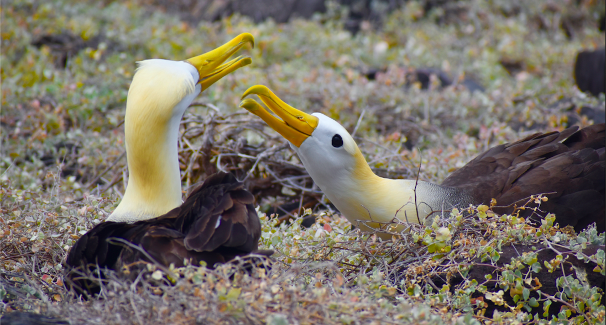

Waved Albatross

Espanola Island, San Cristobal ($200)
This tour takes you by boat from San Cristóbal Island to Española Island. Española is famous for the Waved Albatross, because it is the only current nesting site of this species. The Waved Albatross is migratory, and is only on the island to breed from April- December. To see the mating dance, it is best to go early in the season, around April-July. The albatross population will slowly decrease starting in November as they leave to migrate, and they will mostly all be gone by December.
On Española Island, you can also see beautifully colored male marine iguanas, which start to show rainbow coloring during their mating season. There are also lots of juvenile marine iguanas, many Nazca boobies, swallow tailed gulls, Galápagos hawks, and even Galápagos fur seals.